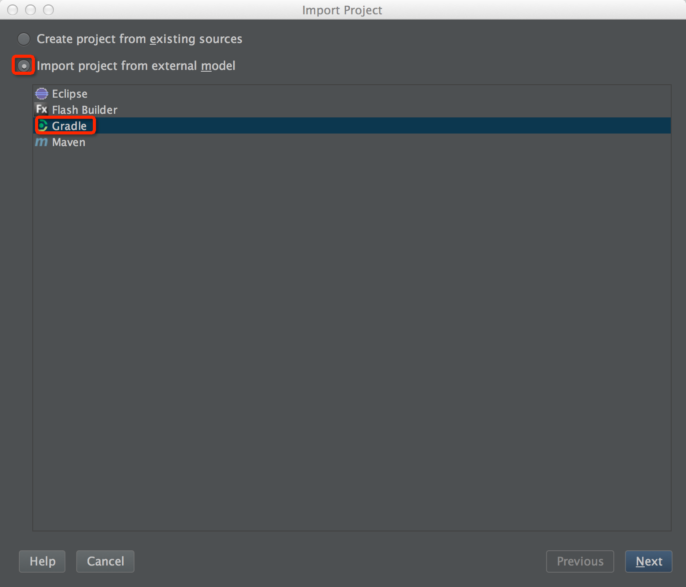
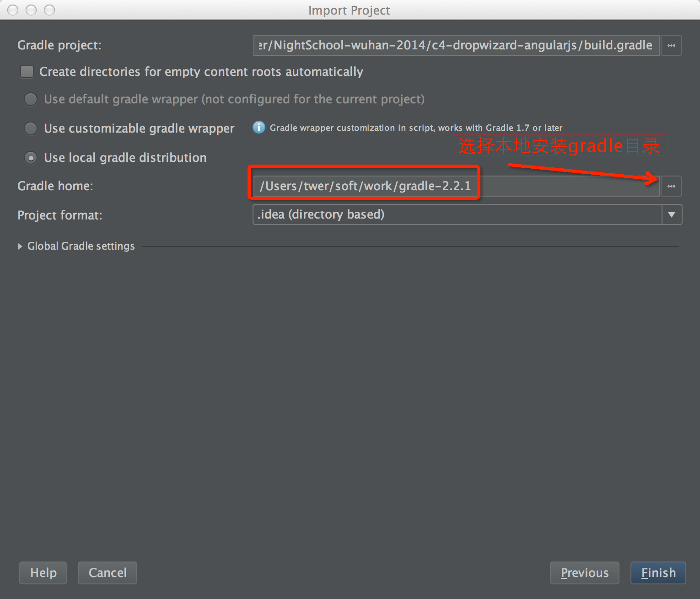
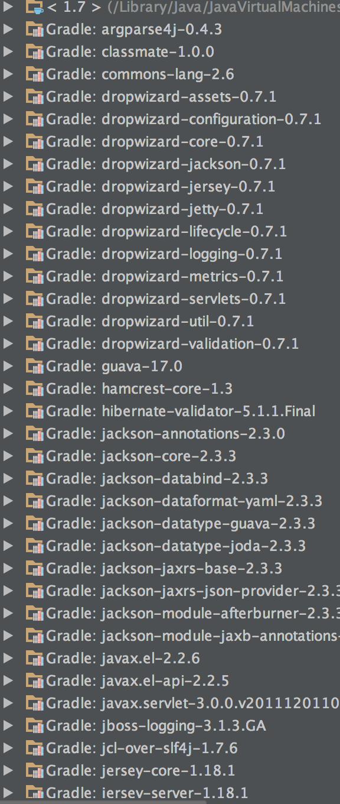
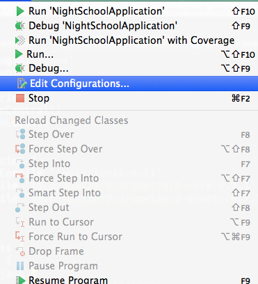
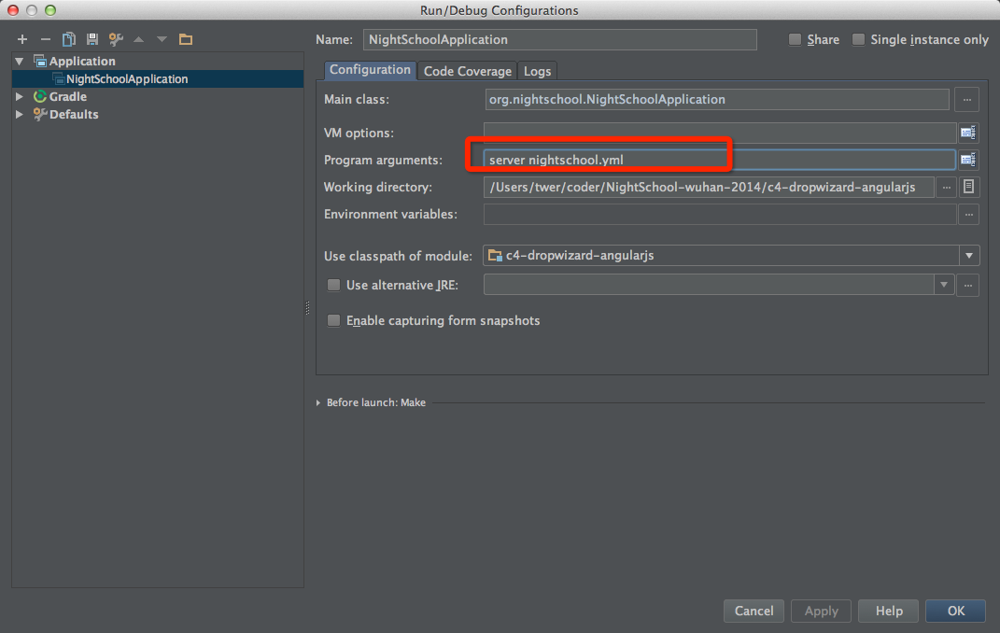
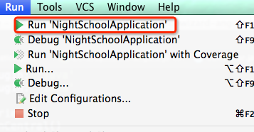
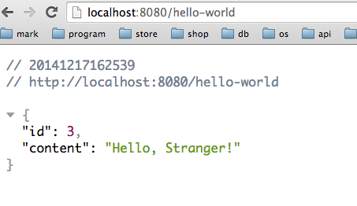

1.进入项目目录(c4-dropwizard-angularjs)，运行gradle test，
过程中会下载很多依赖，在上课之前一定要下载完成,如果有问题及时联系buddy，不然会影响课上进度
2.打开idea，以gradle方式import项目


3.全部处理完成以后，他需要再次下载依赖，需要等待，进入项目以后依赖包如下，成功导入

4.配置启动，进入idea，首先对着NightSchoolApplication点击右键运行，运行报错以后如下配置


5.再次点击运行按钮

6.打开浏览器访问http://localhost:8080/hello-world，出现如下界面，则准备环境搭建成功
